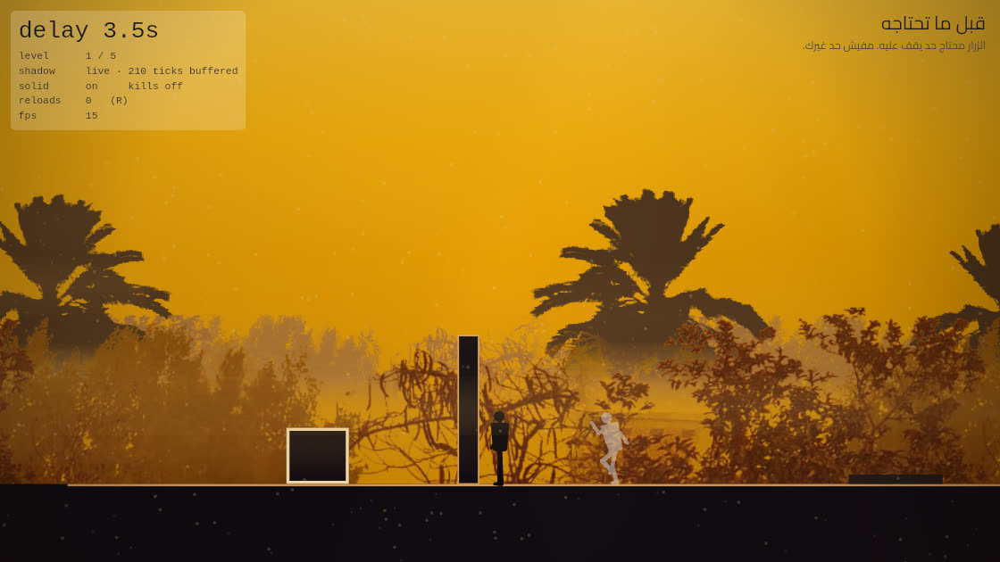

الفكرة
The idea
ظلك بيعيد كل حاجة عملتها، بعد كام ثانية ثابتة. وهو ماشي بيعيد، بيبقى حاجة حقيقية في الدنيا — تقف عليه، يقف في طريقك، أو يمسكك.
Your shadow repeats everything you did, the same few seconds later, every time. And while it repeats it, it is a real thing in the world — you stand on it, it stands in your way, or it catches you.
يعني لو عايز زرار يفضل مدوس هناك، لازم تروح تقف عليه انت بنفسك قبلها بشوية، وبعدين تمشي وتكون في مكان تاني لما نفسك القديمة توصل وتدوسه. فبتقضي اللعبة وانت بتعمل حاجات شكلها ملهاش لازمة، وانت عارف إنها الحل لمشكلة لسه موصلتش لها.
So if you need a button held down over there, you have to go and stand on it yourself a little earlier, then walk away and be somewhere else when your old self arrives and presses it. You spend the game doing things that look pointless, knowing they are the answer to a problem you have not reached yet.
مفيش زرار تسجيل ومفيش رجوع بالوقت. التأخير شغال سواء انت جاهز أو لأ، وده اللي بيخلي الإحساس أقرب لإنك متطارد من إنه لغز هادي.
No record button, no rewinding time. The delay runs whether you are ready or not, which makes it feel closer to being chased than to a quiet puzzle.

نزّل اللعبة
Get the game
نفس اللعبة في كل حتة، ونفس المراحل. ومجانية في كله.
The same game everywhere, with the same levels. Free everywhere.
المتصفح
Browser
من غير تحميل خالص — موبايل أو كمبيوتر.
No download at all — phone or computer.
إلعب دلوقتيPlay now- عايزها أيقونة على الشاشة؟ على أندرويد من قايمة Chrome اختار «إضافة إلى الشاشة الرئيسية».
- على الكمبيوتر، أيقونة التسطيب في آخر شريط العنوان في Chrome أو Edge
- Want an icon on your home screen? On Android, choose “Add to Home screen” in the Chrome menu.
- On a computer, the install icon at the end of the address bar in Chrome or Edge.
أندرويد
Android
Google Play — قريباًGoogle Play — soonولحد ما تنزل على المتجر، تقدر تسطّب الـAPK على طول:
Until it is on the store, you can install the APK directly:
نزّل الـAPKDownload the APK- افتح الصفحة من الموبايل ونزّل الملف اللي آخره .apk
- افتحه، ولو سأل اسمح بالتسطيب من المصدر ده.
- Open the page on your phone and download the file ending in .apk
- Open it, and if asked, allow installs from this source.
آيفون وآيباد
iPhone and iPad
App Store — قريباًApp Store — soonولحد ما تنزل، اللعبة شغالة من Safari كأنها أبلكيشن:
Until then, the game runs from Safari like an app:
- افتح صفحة اللعب في Safari
- زرار المشاركة ← «إضافة إلى الشاشة الرئيسية».
- Open the play page in Safari
- Share button → “Add to Home Screen”.
كمبيوتر
Computer
على itch.ioOn itch.io أو من GitHubor from GitHubالأسهل: أبلكيشن itch بيسطّبها ويحدّثها لوحده كل نسخة. أو نزّل الملف وفكّه:
Easiest: the itch app installs it and updates it on its own, every version. Or download the file and unpack it:
- ويندوز: فك الـzip وشغّل waraya.exe — ولو ظهر تحذير SmartScreen اختار More info وبعدين Run anyway
- ماك: فك الـzip وافتح waraya.app. لو قال إنه مش قادر يتأكد منه: System Settings ← Privacy & Security ← Open Anyway، مرة واحدة
- لينكس: فك الملف وشغّل ./waraya
- Windows: unzip and run waraya.exe — if SmartScreen warns, choose More info, then Run anyway
- Mac: unzip and open waraya.app. If it says it cannot verify it: System Settings → Privacy & Security → Open Anyway, once
- Linux: unpack it and run ./waraya
التحذيرات دي عشان النسخة مش ممضية بشهادة مدفوعة، مش عشان فيها حاجة.
The warnings are because the build is not signed with a paid certificate, not because anything is wrong with it.
التحكم
Controls
كمبيوتر
Computer
موبايل — بالعرض
Phone — held sideways
عن المشروع
About
ستاشر مرحلة. العشرة الأولانيين كل واحدة بتعلّم حاجة واحدة وبعدين تسيبها: الزرار، المنصة، العقبة، التضحية، المفتاح اللي ماضيك بيقلبه تاني، النور اللي جوّاه ظلك مش موجود، وظلين في نفس الوقت. والست اللي بعدهم بيجمعوا ده كله. التأخير بيتغير من مرحلة للي بعدها — نفس التصميم بتأخير تاني بيبقى لغز تاني. وتقدّمك بيتحفظ: تقفل وترجع تلاقي نفسك مكانك.
Sixteen levels. The first ten each teach one thing and then let it go: the button, the platform, the obstacle, the sacrifice, the switch your past flips back, the light where your shadow does not exist, and two shadows at once. The six after them put it all together. The delay changes from level to level — the same layout with a different delay is a different puzzle. Your progress is saved: close it and come back to find yourself where you were.
المكان مصر المعاصرة، مش مصر القديمة. كل حاجة غامقة في الصورة فوق دي صورة فوتوغرافية لمكان حقيقي، متقصوصة silhouette ومتحطة في طبقات.
The place is today's Egypt, not ancient Egypt. Everything dark in the picture above is a photograph of a real place, cut out as a silhouette and layered.
مشروع شخص واحد، يوم في الأسبوع، بـFlutter وFlame. الكود كله مفتوح على GitHub.
One person's project, one day a week, in Flutter and Flame. All of the code is open on GitHub.
تواصل
Contact
لقيت باج، أو مرحلة حاسس إنها ظالمة، أو عندك فكرة؟ اكتبها هنا — عربي أو إنجليزي، ومن غير ما تعرف أي حاجة في البرمجة:
Found a bug, a level that feels unfair, or have an idea? Write it here — in Arabic or English, no programming needed:
ابعت رسالةSend a message اللي اتبعت قبل كدهWhat has been sent
محتاج حساب GitHub (مجاني). ولو بتبلّغ عن مرحلة، اكتب اسمها اللي بيظهر على الشاشة، وجهازك إيه.
You need a (free) GitHub account. If it is about a level, write its name as shown on screen, and your device.